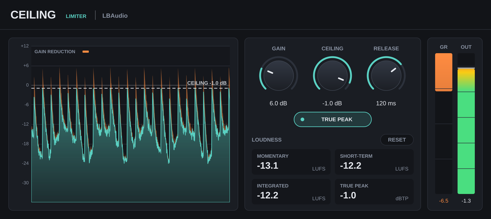

Limiter plugin · VST3 & AU
Ceilingby LBAudio
A true-peak limiter with loudness metering built in. Turn up Gain, set the ceiling, and nothing gets past it.
Instant download. Any local VAT is worked out at checkout. Or get all five plugins in the bundle.
- VST3
- AU
- Windows
- macOS
- Linux
- True peak
- LUFS meter

Hear it on a real beat
A beat by LBAudio, pushed into Ceiling at three loudness levels. Each version is then turned back down to the original's loudness, so you hear what the limiting does to the sound, not just the extra volume.
A few dB of limiting that only catches the loudest hits. The beat comes up without changing its feel.
Watch it work
Short videos with the real plugin on screen. Loudness is the point here, so these aren't level-matched: turn your sound down a little before you press play.
Loud, with nothing over
Gain in, ceiling out, and a readout of exactly how loud your master is.
Nothing gets past
2 ms of lookahead brings the gain down before each peak arrives, so the output never goes over the ceiling, without clipping.
True peak
Catches the peaks between samples that clip in converters and MP3 and AAC encoding. Standard true-peak meters read at or under your ceiling.
Loudness built in
Momentary, short-term and integrated LUFS, plus the highest true peak, so you can hit a streaming target without another plugin.
The controls
Three knobs and a switch. The graph shows the level going in and coming out, with the gain reduction in amber. Double-click any knob to reset it, or click a value and type one in.
| Control | Range | What it does |
|---|---|---|
| Gain | 0 to 24 dB | Pushes the level into the limiter. More gain is louder, with more limiting. |
| Ceiling | −12 to 0 dB | The output never goes above this. −1 dB is a safe choice for streaming. |
| Release | 1 ms to 1 s | How quickly the level recovers after a peak. Longer is smoother; shorter is louder. |
| True peak | On / off | Also catches peaks between samples. Leave it on for anything that will be streamed or encoded. |
| Loudness | LUFS and dBTP | Momentary (400 ms), short-term (3 s) and integrated loudness to EBU R128, plus the true-peak maximum. Reset restarts them. |
Where to start
Four starting points. Set these, then adjust by ear.
-
Streaming master
Ceiling −1 dB · true peak on · raise Gain until Integrated reads about −14 LUFS
Around the level many streaming services play at, with room for their encoding.
-
Loud master
Ceiling −1 dB · release 40–80 ms · Gain to −10 to −8 LUFS
Competitive loudness. Watch the amber gain reduction and back off if the drums lose their snap.
-
Catch the peaks
Ceiling −0.3 to −1 dB · Gain 0–3 dB
A safety net on a mix bus or a single track: it only touches the loudest hits.
-
Smoother
Release 150–300 ms
Longer release means less pumping on dense, bass-heavy mixes.
Specs
One download for each system. No iLok, no account and no activation.
- Formats
- VST3 on Windows, macOS and Linux. Audio Unit (AU) on macOS.
- Windows
- Windows 10 or later, 64-bit.
- macOS
- macOS 10.13 or later. Runs natively on Apple Silicon and Intel.
- Linux
- 64-bit x86 (x86-64).
- Hosts
- Any DAW that loads VST3 or AU plugins, such as Ableton Live, FL Studio, Cubase, Reaper, Studio One, Bitwig and Logic Pro. Not available for Pro Tools (AAX).
- Latency
- 2 ms plus 16 samples (111 samples at 48 kHz), reported to your DAW so it compensates automatically.
- Lookahead
- 2 ms, with the gain fully in place before each peak.
- True peak
- 8x interpolation, plus the ITU-R BS.1770 meter filter, so standard true-peak meters read at or under the ceiling.
- Loudness
- ITU-R BS.1770-4 / EBU R128: momentary, short-term and gated integrated LUFS.
- Channels
- Mono or stereo, stereo-linked.
Questions
Anything else? Email support@lbaudio.co.uk.
How do I install it?
Unzip the download and copy Ceiling.vst3 into your VST3 folder: C:\Program Files\Common Files\VST3 on Windows or ~/Library/Audio/Plug-Ins/VST3 on a Mac. Logic users also copy Ceiling.component into ~/Library/Audio/Plug-Ins/Components. Then rescan plugins in your DAW. The zip includes these steps in INSTALL.txt.
How many computers can I use it on?
All the computers you personally own or use. See the licence agreement for the details.
Can I use it on commercial releases?
Yes. The music you make with Ceiling is entirely yours, with no royalties or credits owed.
Do updates cost anything?
No. Updates to Ceiling version 1 are free for everyone who bought it.
What if it doesn't work on my system?
Get in touch within 14 days of buying. If we can't get it working, you get a full refund. See the refund policy.
Does it work in Pro Tools?
Not yet. Pro Tools only loads AAX plugins, and Ceiling is VST3 and AU.
Where should it go?
Last on your master bus, after everything else. It's also handy on a single track or bus to tame stray peaks.
Ceiling
VST3 & AU for Windows, macOS and Linux. Instant download. Or get all five plugins in the bundle.